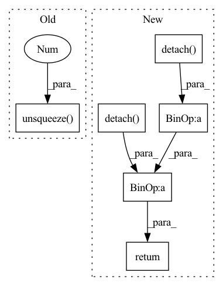

Pattern ID :3409

Before Change
a.scatter_(dim=1, index=label.unsqueeze(1), src=src)
sigma = torch.ones_like(inp, device=inp.device, dtype=inp.dtype) * self.m
src = torch.ones_like(label.unsqueeze(1), dtype=inp.dtype, device=inp.device) - self.m
sigma.scatter_(dim=1, index=label.unsqueeze(1), src=src)
return self.loss(a * (inp - sigma) * self.gamma, label)
After Change
self.gamma = gamma
def forward(self, sp: Tensor, sn: Tensor) -> Tensor:
ap = torch.clamp_min(- sp.detach() + 1 + self.m, min=0.)
an = torch.clamp_min(sn.detach() + self.m, min=0.)
sigma_p = 1 - self.m
sigma_n = self.m
logit_p = ap * (sp - sigma_p) * self.gamma
logit_n = an * (sn - sigma_n) * self.gamma
loss = torch.log(1 + torch.clamp_max(torch.exp(logit_n).sum() * torch.exp(- logit_p).sum(), max=1e38))
z = - torch.exp(- loss) + 1
sp.backward(gradient=z * ap * torch.softmax(logit_p, dim=0))
sn.backward(gradient=z * an * torch.softmax(logit_n, dim=0))
return loss.detach()
if __name__ == "__main__":
In pattern: SUPERPATTERN
Frequency: 3
Non-data size: 6
Instances
Fragment ID: 17494155
Project Name: tinyzeamays/circleloss
Commit Name: 9c909ec6274b1c9c139a62f9f84ecf91c5edee35
Time: 2020-04-03
Author: 1049793129@qq.com
File Name: circle_loss.py
M Class Name: CircleLoss
N Class Name: CircleLossBackward
M Method Name: forward(3)
N Method Name: forward(3)
M Parent Class: nn.Module
N Parent Class: nn.Module
M File Name: circle_loss.py
N File Name: circle_loss.py
M Start Line: 23
M End Line: 34
N Start Line: 43
N End Line: 58
'>
Before Change
x_std[i, :] = x[i, :, :].std(dim=1)
// make sure x_std is not zero
x_std += self.div_guard
return (x - x_mean.unsqueeze(2)) / x_std.unsqueeze(2)
class DitherAudio(nn.Module):
def __init__(self, dither=1e-5):
After Change
self.div_guard = 1e-5
def forward(self, x: torch.Tensor) -> torch.Tensor:
x_mean = x.mean(dim=2, keepdim=True).detach()
x_std = x.std(dim=2, keepdim=True).detach()
// make sure x_std is not zero
x_std += self.div_guard
return (x - x_mean) / x_std
class DitherAudio(nn.Module):
'>
Fragment ID: 17494147
Project Name: scart97/thunder-speech
Commit Name: 868b3d50886a7e0d85f988328f18e7c60aa81bab
Time: 2021-02-24
Author: scart.lucas@gmail.com
File Name: src/thunder/quartznet/preprocess.py
M Class Name: FeatureBatchNormalizer
N Class Name: FeatureBatchNormalizer
M Method Name: forward(2)
N Method Name: forward(2)
M Parent Class: nn.Module
N Parent Class: nn.Module
M File Name: src/thunder/quartznet/preprocess.py
N File Name: src/thunder/quartznet/preprocess.py
M Start Line: 54
M End Line: 68
N Start Line: 54
N End Line: 59
'>
Before Change
a.scatter_(dim=1, index=label.unsqueeze(1), src=src)
sigma = torch.ones_like(inp, device=inp.device, dtype=inp.dtype) * self.m
src = torch.ones_like(label.unsqueeze(1), dtype=inp.dtype, device=inp.device) - self.m
sigma.scatter_(dim=1, index=label.unsqueeze(1), src=src)
return self.loss(a * (inp - sigma) * self.gamma, label)
After Change
self.soft_plus = nn.Softplus()
def forward(self, sp: Tensor, sn: Tensor) -> Tensor:
ap = torch.clamp_min(- sp.detach() + 1 + self.m, min=0.)
an = torch.clamp_min(sn.detach() + self.m, min=0.)
delta_p = 1 - self.m
delta_n = self.m
logit_p = - ap * (sp - delta_p) * self.gamma
logit_n = an * (sn - delta_n) * self.gamma
loss = self.soft_plus(torch.logsumexp(logit_n, dim=0) + torch.logsumexp(logit_p, dim=0))
return loss
if __name__ == "__main__":
'>
Fragment ID: 17494150
Project Name: tinyzeamays/circleloss
Commit Name: 61758eefe091cf44f4de87aadd84fcb2bc377f94
Time: 2020-04-04
Author: 1049793129@qq.com
File Name: circle_loss.py
M Class Name: CircleLossLikeCE
N Class Name: CircleLoss
M Method Name: forward(3)
N Method Name: forward(3)
M Parent Class: nn.Module
N Parent Class: nn.Module
M File Name: circle_loss.py
N File Name: circle_loss.py
M Start Line: 24
M End Line: 35
N Start Line: 28
N End Line: 39